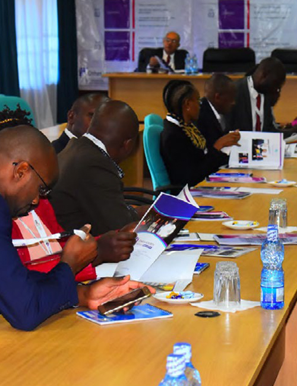

Our Vision
To deliver sustainable and qualified human capital for the increasingly globalized environment.
A professional training institution registered in 2011, dedicated to organizational performance through research, staff empowerment and ethical capacity development.
Who We Are
InCAD – Institute for Capacity Development is a training institution registered in 2011 with a mission to promote performance through research and staff empowerment.
We provide demand‑driven programs and learning solutions tailored to the needs of organizations, counties, government agencies, and individuals seeking professional growth and improved performance.

Our Purpose
The north star that guides every program we design and every organization we serve.
To deliver sustainable and qualified human capital for the increasingly globalized environment.
To build capacity through research, curriculum design, and offer programs aimed at producing outstanding human performance, attitude and competence in your organization. We advocate for ethical practices by infusing ethics into our modules.
Our Story
A short account of how InCAD grew from a single training room into a regional capacity‑development partner.
Founded to promote organizational performance through research and staff empowerment.
Demand‑driven program design becomes core practice, tailored to organizational levels rather than one‑size‑fits‑all content.
Programs extend beyond Kenya to serve institutions in Tanzania and Uganda.
A full annual calendar spanning leadership, labour relations, tax, wellness, safety and communication programs.
Our Principles
The principles that guide everything we do, from curriculum design to client engagement.
We uphold honesty, accountability, and openness in all our engagements.
We embrace creative and practical solutions that improve organizational performance.
We maintain high standards of competence, ethics, and service delivery.
We believe in collaboration and partnership to achieve shared success.
How We Work
The same disciplined process behind a two‑day workshop and a multi‑year institutional partnership.
Skills‑gap analysis and stakeholder consultation to understand the real performance problem.
Curriculum built around your organization's levels, sector and outcomes, not a generic template.
Experienced consultants facilitate in‑person, regional or online sessions with practical case work.
Post‑program review against the original objectives, feeding into the next cohort's design.
Integrity is not a module — it is the foundation of every module.
Our Ethics
InCAD's services are offered to the highest degree of integrity and ethics. As a policy and belief of the organization and its staff, we do not offer any incentives in order to secure opportunities to offer our services.
Our success has been driven by the high quality of service we provide to our clients. Every program is designed with ethical benchmarks woven into the learning outcomes — because sustainable capacity cannot be built on compromised foundations.
"We do not offer incentives to secure opportunities. Our work speaks for itself."
The People
Experienced consultants, trainers, and researchers committed to delivering practical, professional, and impactful learning solutions across diverse sectors.
Prof. Paul P.W. Achola is a distinguished scholar, researcher, and academic leader with over 40 years of experience in education, policy, and consultancy, currently serving as Research Professor at the Catholic University of Eastern Africa and Chairman of the Ethics and Integrity Institute.
Jacky is a certified ethics officer, governance trainer, and Executive Director of the Ethics and Integrity Institute, with extensive experience in leadership, research, and capacity development across more than 25 countries.
Julie S. Ogoye is an experienced ethics and integrity leader at the Teachers Service Commission, specializing in anti‑corruption, governance, and values‑driven leadership with over 20 years championing ethical standards in Kenya's education sector.